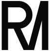
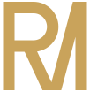
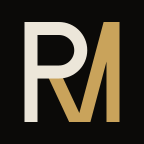
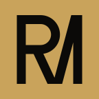

Rômulo Mencalha
Rômulo MencalhaSoftware sob medida
Rômulo MencalhaA diagonal dourada sai do bojo do R, toca a base e sobe até a haste final. Uma linha só faz o trabalho de duas letras: é o que um bom sistema faz com o retrabalho.
Traço único de 13 unidades, bojo em semicírculo perfeito e cortes retos em cima e embaixo. Nada desenhado à mão livre, tudo alinhado na mesma grade.
O R em creme é a base sólida. O dourado marca o movimento: a solução que passa por dentro e conecta tudo.
RMSolutionsHorizontal — principalRMSolutionsVertical
RMSolutionsSobre dourado
Símbolo dourado
Foto de perfil
Ícone douradoInstrument Serif — elegância editorial.
Geist — precisão de quem escreve código.